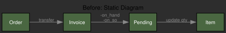
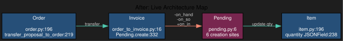
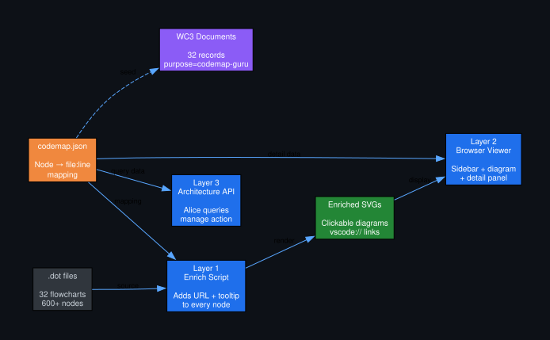
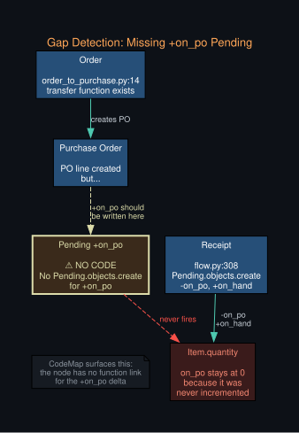
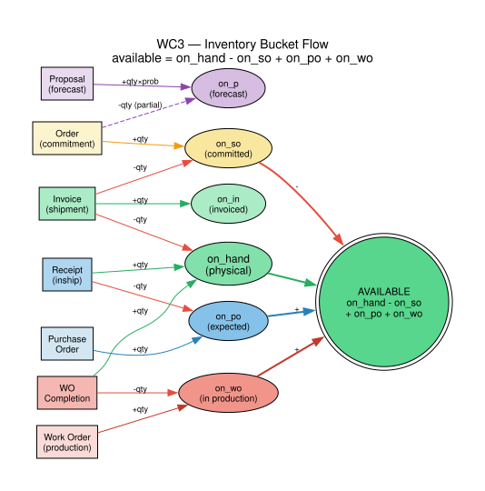
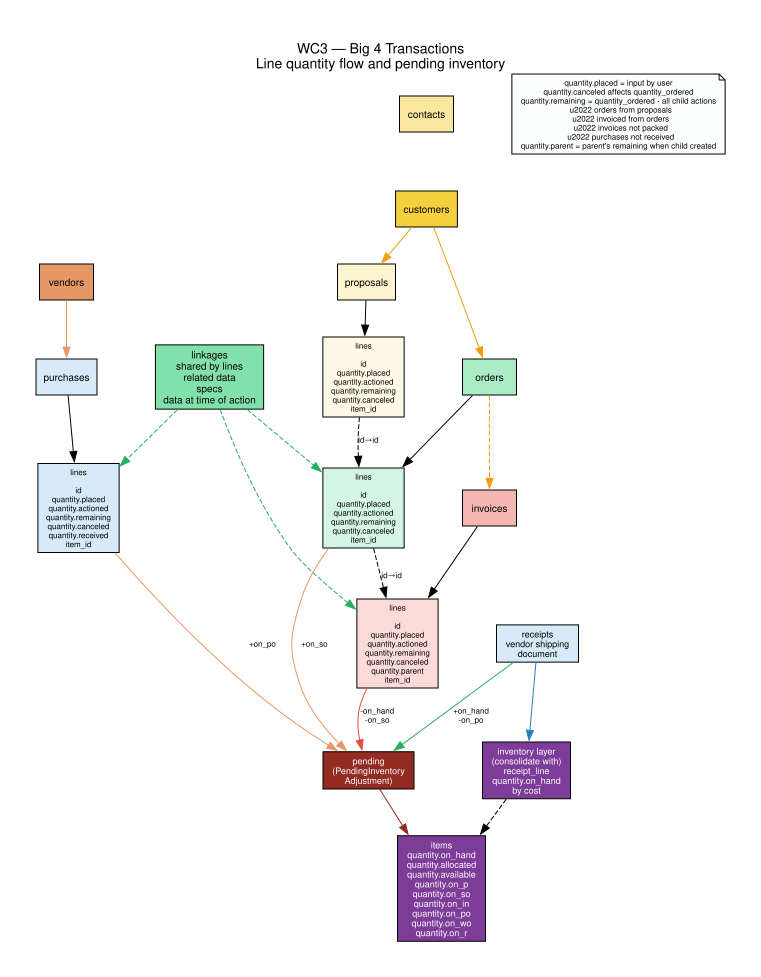

Every node in a flowchart links to the code that implements it. Click the diagram. Read the source. One source of truth.
codemap.guru
Your architecture diagram says "pending records are created when an order
converts to invoice." But it doesn't say where.
Is it flow.py? order_to_invoice.py? Line 332 or 171?
You grep. You find six creation sites across three files. Next month someone refactors and the diagram is wrong again.
CodeMap fixes this. The diagram links directly to
order_to_invoice.py:332. When code moves, update one JSON file
and regenerate. The diagram is always right because it reads the mapping.


One JSON mapping file — codemap.json — powers everything.
Edit it once. All three layers update.

codemap.json is the single source of truth for all three consumers
Python script reads .dot + codemap.json.
Adds URL and tooltip attributes to every mapped node.
Graphviz renders clickable SVG — clicking opens VS Code at the right line.
Idempotent. Run anytime.
Browser-based viewer with a sidebar listing all flowcharts and their coverage counts. Click any node — a detail panel slides in showing functions, file:line links, pending deltas, GL impact, and schema fields.
Three manage actions: get_architecture_node (with fuzzy matching),
get_architecture_map, and list_architecture_flowcharts.
Alice uses these to answer architecture questions by walking the graph.
Every mapped node shows its full code context. Functions with file:line that open in VS Code. Pending deltas color-coded — green increases, red decreases. Code gaps flagged in yellow so you know what's missing before it becomes a bug.
Central hub for inventory quantity deltas. All quantity changes flow through Pending before updating Item.
Purchase order to vendor.
Pending.objects.create writes +on_po. Receipt writes -on_po
on arrival, but nothing incremented it. CodeMap surfaced this automatically
— the node has no function link for the +on_po delta.
When a diagram shows a flow but the mapping has no code for it, that's a gap. CodeMap flags it. You fix it before customers find it.

The +on_po pending record was never implemented — CodeMap found it by mapping diagram nodes to code
This is the actual enriched SVG from the WC3 codebase. 14 of 16 nodes mapped to code — 87.5% coverage. Hover any node for tooltips showing file:line and function context.

wc3-inventory-buckets — available = on_hand - on_so + on_po + on_wo
And the Big 4 Transactions — the core transaction lifecycle with line quantity fields and pending inventory flow. 16 of 19 nodes mapped (84%).

wc3-big4-transactions — line quantity flow and pending inventory
Enrich all flowcharts and render SVGs:
# Reads codemap.json, adds URL/tooltip to .dot files, renders SVG python3 scripts/codemap_enrich.py --all --render
Open the interactive viewer:
# Serves on localhost:8787, opens your browser python3 scripts/codemap_serve.py
Query via API (Alice uses this):
# Get a specific node POST /wcapi/manage/ { "action": "get_architecture_node", "params": { "node": "pending" } } # Fuzzy matching — returns all three journalize functions { "action": "get_architecture_node", "params": { "node": "journal" } } # All mapped nodes in a flowchart { "action": "get_architecture_map", "params": { "flowchart": "wc3-inventory-buckets" } } # Coverage report for all flowcharts { "action": "list_architecture_flowcharts", "params": {} }
Update the mapping and sync:
# 1. Edit the single source of truth readmes/flowcharts/codemap.json # 2. Re-enrich all flowcharts python3 scripts/codemap_enrich.py --all --render # 3. Update WC3 Document records + revision headers python3 scripts/codemap_seed_documents.py --apply
Every flowchart has a Document record in WC3 with
purpose="codemap-guru", tracking revision number, node count,
and coverage percentage. The mapping grows as nodes are added to
codemap.json — coverage increases automatically on
the next enrichment run.
32 architecture diagrams — click any card to view the interactive SVG with clickable code links and tooltips.
Complete transaction lifecycle — proposals through fulfillment and GL posting
Proposals, orders, invoices, purchases — the four transaction types and their relationships
The fulfillment pipeline — order lines become invoice lines, pending records move inventory
How quantity flows: on_hand, allocated, available, on_so, on_po, on_wo, on_in, on_r
The central hub — every inventory change flows through Pending before updating Item
Cash application, journal entries, AR/AP posting
Purchase order and sales order bundling flow
Bank CSV → classify business/personal → export → Payment.expense → GL journal entry
Item model, quantity JSON, inventory layers, costing
Serial number lifecycle — assignment, transfer, warranty, return
Serial-specific actions and audit trail
Central identity — customers, vendors, employees, prospects
Sales flow from customer perspective — proposals, orders, fulfillment
Authentication flow — registration, login, password reset
GL export, journal sync, chart of accounts mapping
Bank feeds, reconciliation, payment processing
Event scheduling, appointment sync
Email, SMS, notification dispatch
CI/CD, code deploy, environment management
SSO, OAuth, CarryOn identity integration
Inter-database sync, WC_HQ coordination
Payment gateway integration — Stripe, Square, etc.
Carrier integration — rates, labels, tracking
Tax engine integration — jurisdiction, rates, exemptions
Project management — actions, documents, assigned contacts
Action tracking — tasks, approvals, escalation
Quality assurance — inspection, compliance, certification
Cross-record references, shared line data, specs
CSV/Excel import — Alice maps columns, multi-pass, bundle output
File management, versioning, access control
Multi-currency support — rate sources, conversion, history
Request pipeline — authentication, RBAC, query scoping
Background task processing — workers, beat scheduling, retry
{kind=link}
{kind=link}
{kind=link}
{kind=link}
{kind=link}
{kind=link}
{kind=link}
{kind=link}
{kind=link}
{kind=link}
{kind=link}
{kind=link}
{kind=link}
{kind=link}
{kind=link}
{kind=link}
{kind=link}
{kind=link}
{kind=link}
{kind=link}
{kind=link}
{kind=link}
{kind=link}
{kind=link}
{kind=link}
{kind=link}
{kind=link}
{kind=link}
{kind=link}
{kind=link}
{kind=link}
{kind=link}
{kind=link}